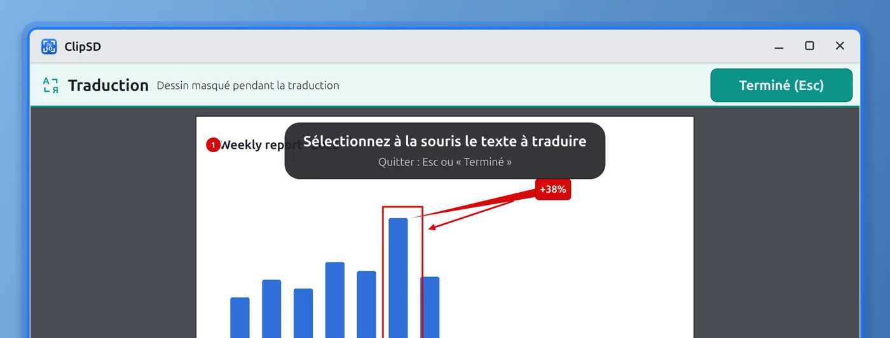

Historique des versions
Version 1.31.0
sortie le
- ClipSD parle 12 langues : russe, anglais, bulgare, ukrainien, allemand, français, espagnol, italien, portugais, polonais, turc et chinois. La langue change immédiatement, sans redémarrage : menu de l’icône près de l’horloge, globe dans l’éditeur, première étape de la visite guidée ou paramètres.

- Nouveau panneau dans la fenêtre de sélection : en haut, capture de tout l’écran, enregistrement vidéo, copie du texte et traduction ; en bas, « Modifier », « Enregistrer » et « Copier et fermer ».

- Traduction morceau par morceau : délimitez une zone, et la traduction se superpose au texte ; délimitez la suivante, et elle est traduite à son tour. Échap quitte ce mode.

- Les modes de l’éditeur « Copie du texte », « Rognage » et « Traduction » s’affichent dans une barre en haut, avec un grand bouton de sortie ; Échap rétablit l’outil précédent.

- ClipSD se met à jour tout seul. Une fois par jour, il vérifie s’il existe une nouvelle version et propose « Mettre à jour », « Plus tard » ou « Ignorer cette version ». Pour vérifier immédiatement : menu de l’icône, « Rechercher des mises à jour ». La mise à jour est contrôlée au moyen d’une signature numérique ; si la nouvelle version ne démarre pas, la précédente est rétablie.